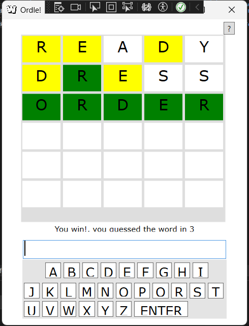
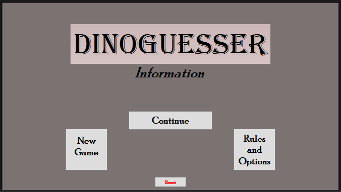
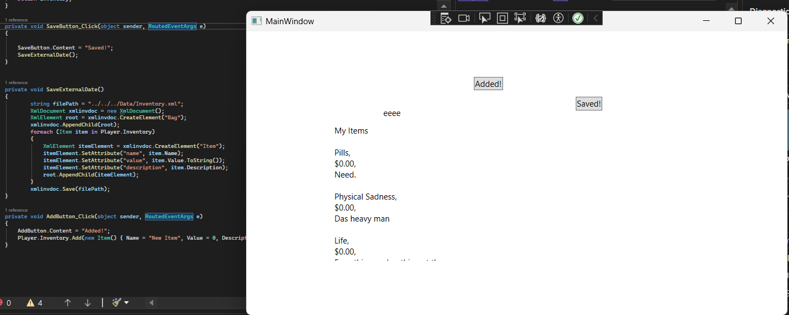
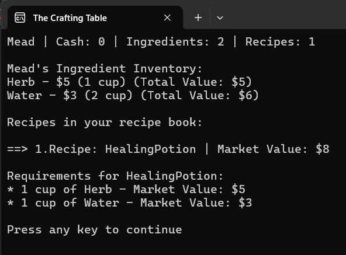
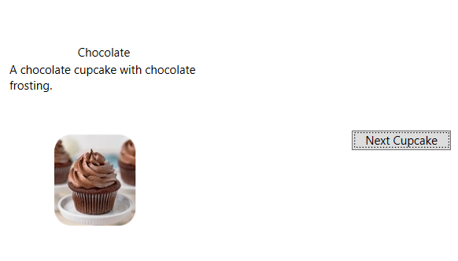

This's a ScreenShot from a my recreation of the new york times game, wordle. The textblocks holding the letters and the buttons making up the keyboard populate the wrap panels upon execution. The recreatiom features alot of the same features as the original such as different backgrounds for how close you were to the solution.

This's a ScreenShot from a game built using WPF. This's my first major project to pull in information via xml. It's a trivia game where you choose a continent and your given a random dinosaur from that area and you have to figure out it's location based on clues provided.

A small demo application to Write from and save to a xml file.

A console app based on a crafting system. The items aren't hard coded in, the items capable of being crafted depend purely on the xml file currently loaded into the app.

Printed the lyrics to the cumulative verse song twelve days of christmas using as loops and as little print lines as possible.